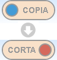
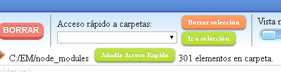

Cuando se inicia la aplicación debe elegir una base de datos existente o crear una nueva.
Si no es la primera vez que inicia el programa, la última base de datos utilizada se selecciona automáticamente y puede cambiarla seleccionando otra base de datos ya creada de la lista de selección ‘Cambiar base de datos’, o, alternativamente, introduzca un nuevo nombre en el campo de entrada cerca del botón ‘Nueva base de datos’ y presionelo o pulse Intro.
Si es la primera vez que inicia el programa, debe introducir un nuevo nombre en el campo de entrada mencionado.
Cada base de datos está asociada a una unidad como ‘C:’, ‘D:’, ’G:’, etc. (en Windows) o ‘/’, ‘/media/user/externaldrive’, etc. (en Linux), o ‘/Volumes/yourdrive’ (en macOS) pero esta unidad asociada se puede cambiar en cualquier momento en las opciones del programa, esto es así que, si usted tiene los datos para ser etiquetados en una unidad externa, todo funciona correctamente aunque el sistema haya sido capaz de elegir otra ruta de acceso a la unidad que utilizó la última vez, o cambia el sistema operativo.
Por lo tanto, seleccione una unidad si es necesario (por defecto se selecciona aquella a partir de la cual se ejecuta el programa) y pulse el botón ‘¡Iniciar!’ para iniciar.
Otros botones en las opciones iniciales son ‘Importar datos’; que presionándolo puede elegir un archivo donde una base de datos se ha exportado previamente e importarlo en la base de datos que usted elija. And delete, to delete database that you select.
También está disponible un conmutador para cambiar entre los modos de color y "escala de grises", además de un selector de idioma, en esta ventana de opciones inicial.
Más información sobre importación/exportación y bases de datos en la ayuda sobre opciones generales.
Nota importante: Cuando haya utilizado alguna versión del programa y lo haya actualizado a una versión más reciente, no hay ningún problema, pero, si actualizó la versión y más tarde se utiliza la versión más antigua es posible (no siempre) que la lista de base de datos desaparezca. Debido a esto, se recomienda exportar la base de datos a un archivo de vez en cuando, ya que la importación de datos desde el archivo siempre funciona bien independientemente de la versión.
Después de ejecutar el programa y pulsar ‘¡Iniciar!’ En las opciones iniciales de base de datos, se inicia la interfaz general del programa.
Hay dos ventanas principales en el programa; el explorador, que se inicia al principio, y el buscador, puede ir alternativamente de uno a otro seleccionando la correspondiente pestaña debajo del logotipo 'tagstoo'.
Los elementos que se irán visualizando en ambas ventanas principales (los elementos de un directorio en en explorador y los elementos buscados en el buscador) podrán seleccionarse acumulativamente usando el ratón (por ejemplo varios grupos) contando además con las siguientes ayudas:
| Ctrl-a | Alternativamente selecciona o deselecciona todos los elementos de la carpeta o encontrados. |
| Shift | Selecciona todos los elementos entre el penúltimo seleccionado y el último. |
| Esc | Deselecciona todos los elementos seleccionados. |
Para acceder a una carpeta, mantenga pulsado el botón del ratón en la carpeta (tanto en la vista del árbol del panel izquierdo como en las carpetas accesibles en cada momento en el panel derecho).
Para abrir la estructura de un árbol de una carpeta concreta en la vista de árbol del panel izquierdo, simplemente haga clic (sin mantener pulsado) en la carpeta que desee.
Para lanzar un archivo, que puede ser un archivo ejecutable o cualquier tipo de archivo, presione y mantenga presionado el archivo que desea, si es un ejecutable se ejecutará, si es de cualquier otro tipo, por ejemplo un video o un archivo de texto, lanzará al espectador que está configurado en el sistema como visor predeterminado para ese tipo de archivo.
Una opción adicional está disponible para las imágenes, por lo que aparte del visor de imágenes del sistema que se inicia si presiona y mantiene pulsado el botón del ratón sobre el nombre o cualquier otro espacio del elemento excepto la imagen en sí, si hace clic en la imagen, se iniciará un visor de imágenes interno de Tagstoo.
Cabe mencionar que también está disponible la opción de crear carpetas haciendo clic en el icono correspondiente ( ).
Hay varios modos de visualización, el primer ‘1’ (que es el modo de visualización inicial cuando se inicia el programa) muestra la carpeta y los archivos en una lista cada uno en una fila que tienen varias columnas; primero, el icono (o mini-vista previa de la imagen) y el nombre, segundo, la extensión de los archivos o el número de elementos que contiene cada carpeta, el tercero, el tamaño de los archivos, el cuarto, las etiquetas del elemento, la quinta, la última fecha modificada del elemento y la sexta, la duración en caso de que el archivo sea multimedia (audio o video).
Los otros modos de visualización, ‘2’ a ‘9’, presentan los elementos como tarjetas de diferentes tamaños desde los más pequeños ‘2’ a los más grandes ‘9’.
Cualquiera de los modos de visualización seleccionados puede mostrar elementos ordenados en el modo que se puede seleccionar en el selector ‘Ordenar por:’ en la parte superior, por defecto los elementos se ordenan inicialmente por nombre en orden ascendente (A-Z) las otras opciones son; por nombre descendiente (Z-A), por extensión (A-Z) y (Z-A), Tamaño de pequeño a grande y de grande a pequeño y último modificado de nuevo a más antiguo y de más antiguo a más nuevo.
Esto se utiliza para aplicar, después, alguna acción del sistema de archivos (es decir, copiar, mover o eliminar) a los elementos que elija. En el panel derecho, utilice el ratón para seleccionar varios elementos o también puede seleccionar uno a uno o usar la tecla shift para seleccionar todos los elementos entre dos clics y combinar selecciones para elegir fácilmente lo que desea.
Hay dos maneras de copiar y mover los elementos seleccionados, en ambas hay que tener en cuenta qué opción está seleccionada en el interruptor ‘COPIA/CORTA’ en la parte superior.
La primera forma es arrastrar y soltar elementos del lado derecho a una carpeta en el lado izquierdo, copiará o moverá los archivos dependiendo de la opción seleccionada en el conmutador de la parte superior.
Otra forma de copiar o mover es seleccionar una carpeta en el lado izquierdo, haciendo doble clic en ella, y luego presionando el botón ‘PEGAR’ en la parte superior. Mueve o copia elementos seleccionados a la derecha, dependiendo de la opción seleccionada en el interruptor de la parte superior.
Simplemente elija los elementos que desea eliminar en el panel derecho y presione el botón ‘BORRAR’ en la parte superior, tenga cuidado, no hay acción de deshacer para borrar archivo o carpetas (por seguridad hay una pregunta de confirmación cuando se presiona este botón).
Para cambiar el nombre de un archivo o carpeta, haga doble clic en el nombre del elemento seleccionado y escriba el nuevo nombre.
Hay deshacer para la mayoría de las posibles acciones sobre los elementos, excepto para eliminar carpetas o archivos, es decir; mover o copiar archivos y carpetas, cambiar el nombre de un archivo o carpeta, agregar una etiqueta a un archivo, a una carpeta o a una carpeta y sus subelementos y eliminar una etiqueta del elemento.
Para deshacer la acción no deseada simplemente haga clic en el botón ‘DES.’ en la parte superior.
En cada base de datos aparte de la información sobre las etiquetas también se guardan los accesos rápidos a las rutas de las carpetas.
Puede agregar una carpeta a esta lista ingresando en la carpeta deseada y haciendo clic en ‘Añadir Acceso Rápido’, así que ahora desde donde quiera que esté si selecciona la carpeta de la lista y hace clic en ‘Ir a selección’ se abrirá la carpeta en el explorador.
También puede eliminar la carpeta seleccionada de la lista haciendo clic en ‘Borrar selección’.
Hay un par de botones de actualización, uno para la vista de árbol a la izquierda y otro para la vista de directorio a la derecha, que actualizarán el contenido de sus respectivos ámbitos.
Esto es útil si por alguna razón la información no se visualiza correctamente o si no se actualiza (por ejemplo, si realiza un cambio en el sistema de archivos con un programa fuera de Tagstoo, y la carpeta afectada está abierta).
Las etiquetas se gestionan en la parte inferior de la ventana del programa y, para añadir una etiqueta a un elemento, simplemente elija una etiqueta y arrástrela y suéltela sobre el elemento que desea.
Las posiciones de las etiquetas son intercambiables, tanto en el selector de etiquetas de abajo como en cada una de las listas de etiquetas de elementos.
Para crear una nueva etiqueta, haga clic en el botón ‘Añadir nueva Etiqueta’. Aparecerá una nueva ventana con tres opciones que puede administrar; la forma de la etiqueta (elegir uno de ellos), el color (haciendo clic en el círculo) y el texto (introduciéndolo en el campo de entrada). Puede previsualizar el resultado en el cuadro de vista previa.
Pulse ‘¡Crear etiqueta!’ si está satisfecho con el resultado.
Aquí debe seleccionar primero la etiqueta que desea editar o eliminar de la lista de etiquetas creada anteriormente.
Si desea editar la etiqueta, están disponibles las mismas opciones que las de crear una nueva etiqueta, pero en este caso se aplicarán los cambios sobre la etiqueta seleccionada al pulsar el botón ‘¡Guardar etiqueta editada!’.
Si desea eliminar una etiqueta simplemente pulse ‘¡Suprimir etiqueta!’ después de seleccionar una etiqueta. Tenga cuidado porque todas las asociaciones a esta etiqueta se perderán, por seguridad hay una pregunta confirmatoria.
Para agregar una etiqueta a un archivo arrastrar y soltar desde las etiquetas, listadas en la parte inferior, al archivo deseado.
Para agregar una etiqueta a una carpeta, puede arrastrar y soltar indistintamente la etiqueta de la lista inferior a una carpeta en la vista del árbol del panel izquierdo oa una carpeta en el panel derecho. En ambos casos se le preguntará si desea agregar una etiqueta sólo a la carpeta o también a subelementos de la carpeta. Si selecciona la última, la etiqueta seleccionada se agregará también a los elementos dentro de la carpeta (pero no a los elementos dentro de una carpeta dentro de la carpeta).
Puede hacer que el programa ya no pregunte si desea agregar una etiqueta a los subelementos marcando la opción correspondiente en el menú de opciones (ver abajo)
Se puede recordar aquí que puede cambiar el orden de las etiquetas de cada elemento arrastrándolas y soltándolas.
Para eliminar las etiquetas asociadas a los elementos, hay dos formas posibles; para aquellos que están usando un raton es tan simple como hacer clic en la etiqueta con el botón derecho del raton, la otra forma es activando el borrador de etiquetas haciendo clic en la goma (icono ) y luego haciendo clic sobre la etiqueta o las etiquetas que desea borrar.
Puede copiar todas las etiquetas de un elemento en todos los demás elementos que quiera, para hacer esto primero debe tener seleccionados los elementos donde quiere que se copien los tags, después teniendo el copiador de tags activado (icono ) haga click en el área de tags del elemento desde donde quiere que se copien.
En esta ventana pueden realizar búsquedas de elementos con las etiquetas deseadas.
En el lado izquierdo de la ventana puede elegir las opciones de búsqueda y agregar etiquetas a cualquiera de los campos de entrada de etiquetas arrastrando y soltando etiquetas en ellas.
La primera opción es para seleccionar desde qué carpeta se inicia la búsqueda (que incluirá todos los elementos y subcarpetas por debajo de esta carpeta), por defecto se selecciona el directorio raíz de la base de datos seleccionada (es decir, 'C:' o 'D:' o lo que sea).
Para cambiarlo pulse el botón ‘Seleccionar para buscar desde..’, y aparecerá la ventana de selección de carpeta.
Seguidamente y de manera opcional puede definir si los elementos que quere buscar (ficheros o/y carpetas) deben estar a su vez bajo carpetas que deben tener algunas etiquetas específicas.
Aquí puede agregar todos los campos de entrada que necesite y en cada campo de entrada puede añadir todos los tags que necesariamente cualquiera de las carpetas padre de los elementos buscados (no necesariamente las carpetas padre directas) deben tener.
Otra opción es qué buscar; carpetas, archivos o carpetas y archivos. Después de elegir y pulsar ‘Buscar’ la búsqueda se realizará sobre el tipo de elemento seleccionado para las etiquetas que elija.
Puede agregar todos los campos de entrada que necesita para completar sus criterios de búsqueda, en cada campo de entrada puede agregar etiquetas que necesariamente deben tener los elementos buscados, y utilizando varios de estos campos puede crear varias condiciones que los elementos buscados deben cumplir y agregar todos ellos a los resultados buscados.
Por ejemplo, en un campo puede agregar las etiquetas 'gato' y 'blanco' y en otro campo puede agregar las etiquetas 'perro' y 'marrón', por lo que el resultado de la búsqueda devolverá todos los gatos blancos y perros marrones.
Puede agregar todas las entradas que necesite haciendo clic en ‘Otro filtro (Que tienen)...’.
Debajo de estos campos existe otro tipo de campo de entrada que, en este caso, es para agregar etiquetas que los resultados buscados no deben tener, en el caso que sea conveniente para usted que pueda especificar algunas de ellas.
El buscador tiene sus propias opciones de selección de modo de vista y orden, independientemente del explorer, y son accesibles por los selectores correspondientes en la parte superior del panel de resultados de búsqueda. Adcionalmente, es posible separar los resultados de la búsqueda en varias páginas con x elementos buscados en cada página que se pueden seleccionar en el selector correspondiente.
Además, a la derecha de la selección de orden de búsqueda hay un icono que muestra una hoja con texto, haciendo clic en ella estará disponible para mostrar una vista imprimible tanto de los resultados de búsqueda actuales con sus tags como de una lista de texto de los nombres de carpetas/archivos buscados que también se pueden guardar como archivo de texto (por lo que se puede utilizar, por ejemplo, como una lista de reproducción para un programa externo).
Al pulsar y mantener pulsado el puntero sobre una carpeta de los resultados buscados, la carpeta se abrirá en la ventana del explorador.
Si presiona y mantiene presionado el puntero sobre un archivo, será ejecutado o visto, como de costumbre, por el visor del sistema predeterminado para ese tipo de archivos. Al igual que en el explorador, se agrega otro método para las imágenes, es decir, si se hace clic en una imagen se inicia el visor interno del programa (que tienen la ventaja de que la selección anterior/siguiente corresponde con las imágenes de los resultados buscados).
Puede agregar etiquetas o borrar etiquetas de los elementos buscados (y cambiar el orden de las etiquetas) igual que en el explorador.
Para copiar o mover archivos y carpetas buscados, primero seleccione los elementos sobre los que desea actuar haciendo clic en ellos, luego chequee el conmutador copia/corta en la parte superior si está en su posición deseada; "corta" si desea mover elementos o "copia" si desea copiarlos. A continuación, pulse el botón ‘PEGAR’.
Se le preguntará si desea copiar / mover las etiquetas también. Por ejemplo, imagine que desea copiar los resultados de la búsqueda en un directorio o unidad aparte, para una presentación que no tiene nada que ver con este programa, en ese caso puede seleccionar no copiar etiquetas.
Tanto en la acción de copia como en la de movimiento, en el caso de que elija copiar/mover las etiquetas también, debe seleccionar una carpeta que esté dentro de la unidad asociada a la base de datos en ese momento. Por otro lado, si elige no copiar/mover etiquetas, puede elegir cualquier carpeta o unidad disponible.
Probablemente, será un caso raro si se elige mover elementos sin etiquetas, pero tenga en cuenta que en este caso las etiquetas asociadas a esos elementos se perderán.
De la misma forma que en el explorardor: Simplemente elija los elementos que desea eliminar y pulse el botón ‘BORRAR’ en la parte superior, por seguridad hay una pregunta de confirmación cuando se pulsa este botón.
Al igual que en el explorardor, puede cambiar el nombre de un archivo haciendo doble clic en él y escribiendo el nuevo. En este momento no es posible cambiar el nombre de las carpetas buscadas desde aquí (pero puede cambiarlas en el explorador).
Al hacer clic en el icono de opciones (la pieza de máquina azul dentada en la parte superior) aparecerá una ventana con opciones de base de datos y opciones generales.
En esta ventana puede cambiar la base de datos utilizada actualmente o la letra de unidad asociada a ella, simplemente eligiendo una base de datos de la lista de bases de datos (o creando una nueva, poniendo un nombre no utilizado y haciendo clic en ‘Nueva base de datos’) o seleccionando una unidad de la lista disponible (‘Cambiar unidad asociada’) respectivamente.
Cuando haya seleccionado el nombre de la base de datos deseada, puede hacer clic en ‘Cárgarla’ para cargar esa base de datos, con la unidad asociada seleccionada, en la aplicación.
También puede eliminar la base de datos seleccionada haciendo clic en ‘Borrar base de datos’.
Otra opción en esta ventana es importar desde o exportar a archivo la base de datos seleccionada.
Nota: El programa no requiere instalación, por lo que uno puede preguntarse ¿dónde se guardan los datos? ¿Dónde están todas las etiquetas y sus asociaciones guardadas si el archivo ejecutable no cambia y no se guarda nada en las carpetas y archivos afectados?. La respuesta es: en una base de datos que se guarda en algún lugar dentro de la ruta ‘C:\users\%user%\AppData\Local\Google\Chrome\User Data\Default’ (en Windows) or ‘/home/%user%/.config/google-chrome/Default/IndexedDB/’ (en Linux) or ‘/Users/%user%/Library/Application Support/Google/Chrome/Default/IndexedDB/’ (en MacOS) y que no es legible para los humanos sólo para el programa específico.
Por lo tanto, los datos se guardan en una ubicación que sólo funcionará para el usuario actual en la máquina actual.
Si desea leer los datos en otra sesión con otro usuario o en otro equipo, o desea tener los datos en un archivo y eliminar la base de datos por cualquier motivo, o simplemente desea tener una copia de seguridad, puede exportar datos a un archivo e importar este archivo más adelante, en cualquier lugar que desee.
Para exportar datos de la base de datos seleccionada a un archivo, asegúrese de que la base de datos que desea exportar sea la base de datos seleccionada (‘Base de datos actualmente seleccionada’) y que no necesariamente será la base de datos abierta, y pulse ‘Exportar datos’ y se le pedirá que seleccione un archivo (o en Windows también puede crear un menú contextual del botón izquierdo del ratón) a donde exportar los datos, el archivo puede tener cualquier extensión que desee.
Para importar datos seleccione la base de datos a la que desea importar y haga clic en ‘Importar datos’, se le pedirá que seleccione un archivo donde los datos fueron exportados previamente, después de elegir el archivo, si los datos son válidos, se importará y estará listo para usar en la base de datos seleccionada.
Algunas otras opciones también están disponibles en esta ventana:
• Cambia entre los modos color y escala de grises; un interruptor para cambiar los colores de la interfaz para que se adapten mejor a su gusto.
• Confirmación al cerrar el programa; que por defecto está desactivado.
• Buscar actualizaciones al inicializar; buscará si está disponible una nueva versión, por defecto está desactivada.
• Mostrar sugerencias al iniciar el programa; que por defecto está activo.
• Mostrar tooltips (ayuda en línea); que por defecto está activo.
• Cargar etiquetas de demostración cuando se inicia una nueva base de datos; que por defecto está activo, pero se recomienda que, cuando sepa acerca de la interfaz básica, desactive.
• Automáticamente no añadir etiquetas a subelementos de carpetas; por defecto está desactivado, si está marcado cuando se agrega una etiqueta a una carpeta, el programa no preguntará si desea agregar la etiqueta a los subelementos de la carpeta y no agregará la etiqueta a los subelementos.
• Vista previa de imágenes y epubs en Vista modo 1; por defecto está desactivado, es porque las miniaturas son realmente muy pequeñas en este modo de visualización, pero para alguien puede ser de todos modos útil por lo que esta opción está disponible.
• En el visor de imágenes cambia a la siguiente imagen cada X segundos; se puede activar para cambiar automáticamente la imagen cada X segundos, a la siguiente, cuando el visor de imágenes se inicia con cualquier imagen.